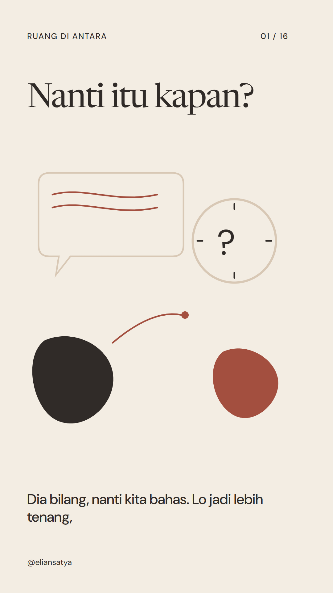
Show an indefinite speech space between two people and a clock without an agreed marker.
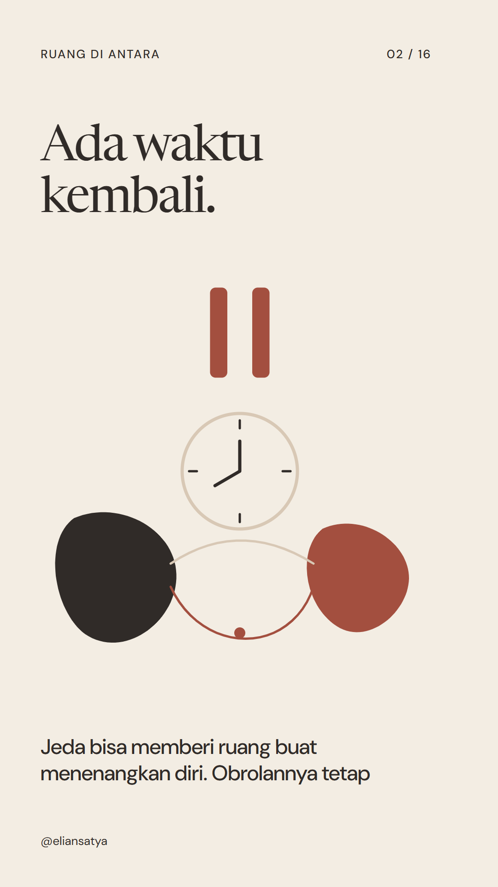
Give the value early: a pause and an agreed return are part of one plan.
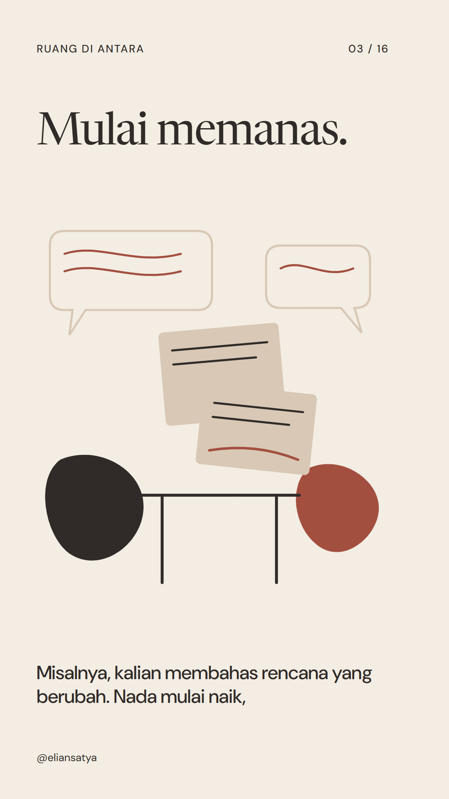
Establish a changed shared plan on a table as the illustrated argument begins.
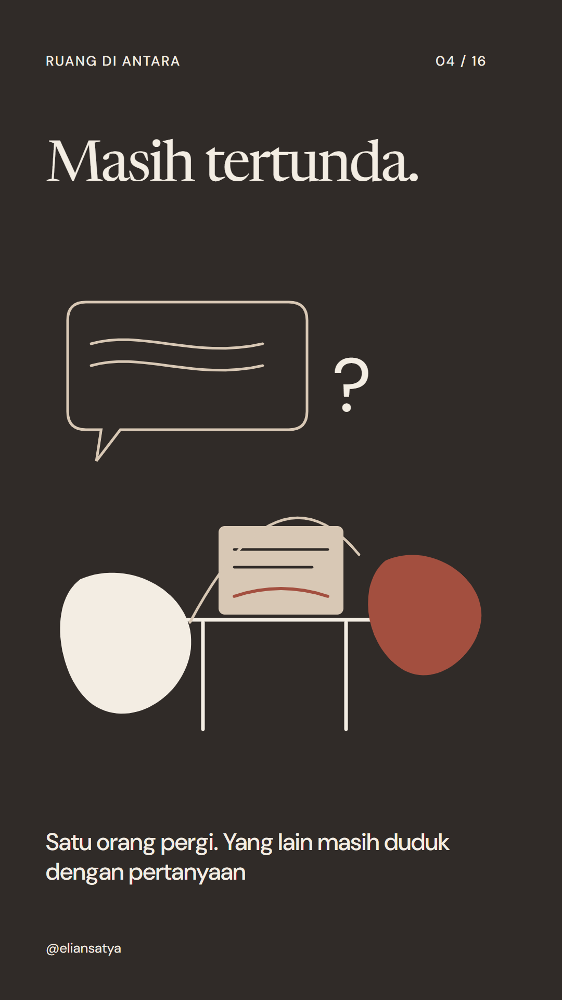
One participant moves away while the unfinished shared topic stays with the other.
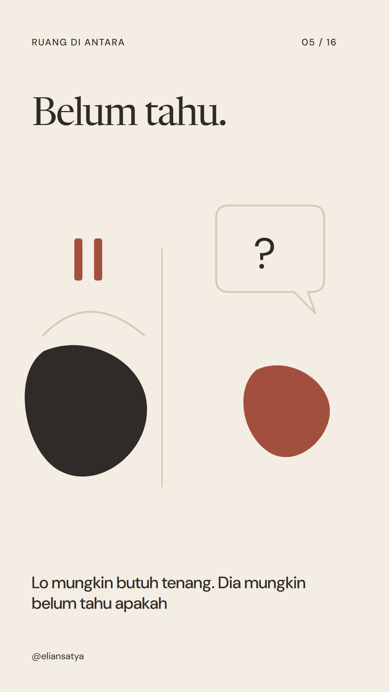
Show separate possible experiences without pretending to read motives.
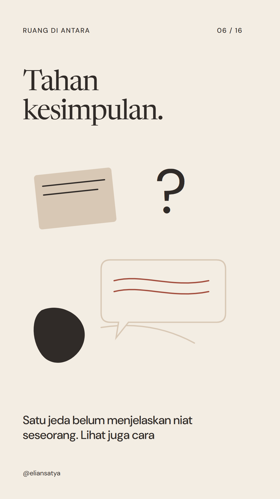
Keep an open question beside the departing trace instead of attaching a verdict.
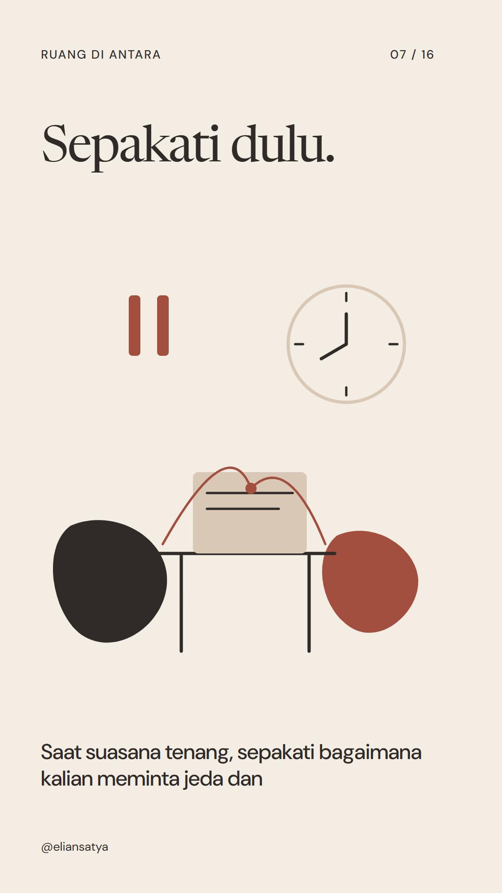
In a calm two-shot, both participants place a marker on a shared agreement.
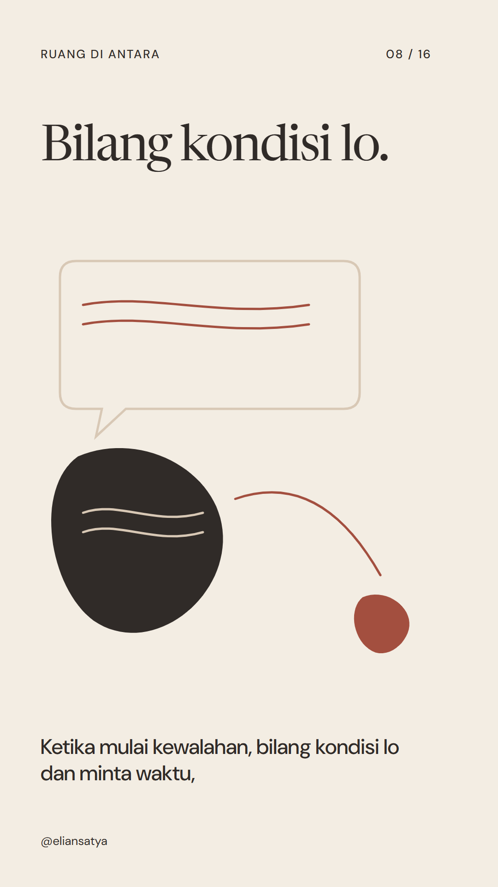
Focus on the requester naming their own state and opening room for a pause.
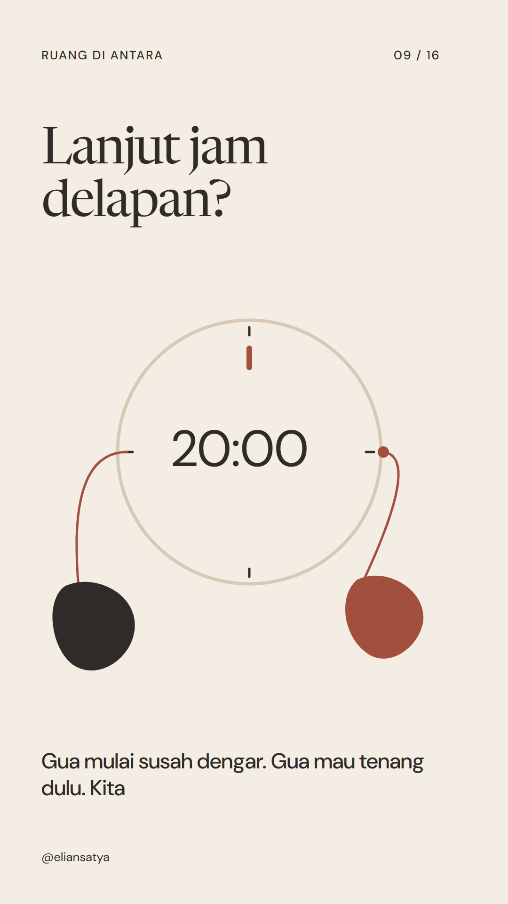
Let a proposed time travel from the requester toward a shared clock.
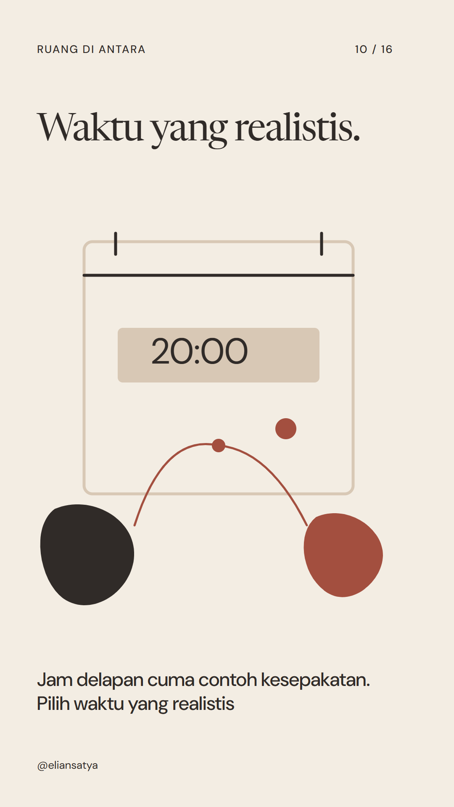
Give both participants room to choose a realistic appointment rather than a universal interval.
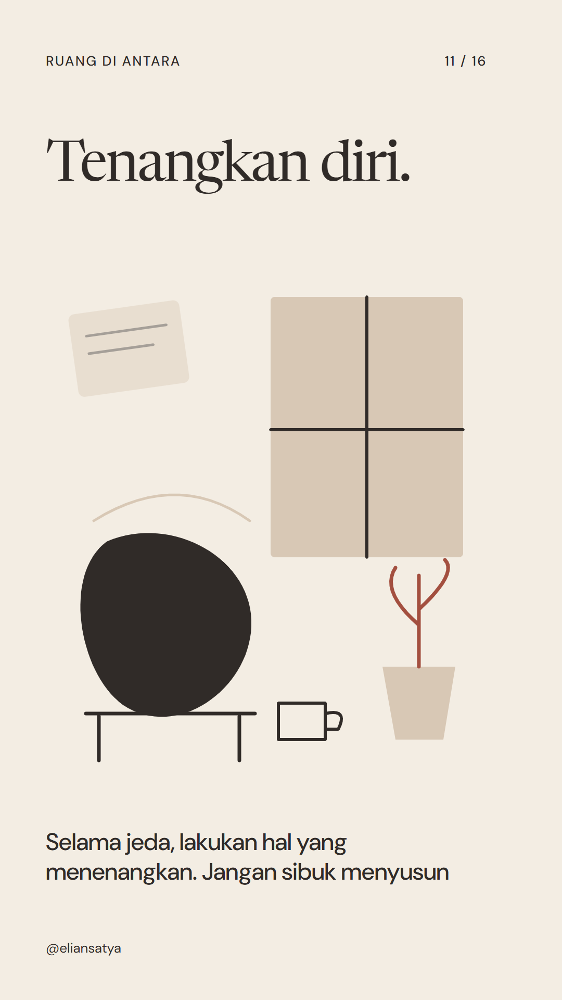
Use a window, plant and seated silhouette to make the cooling interval concrete.
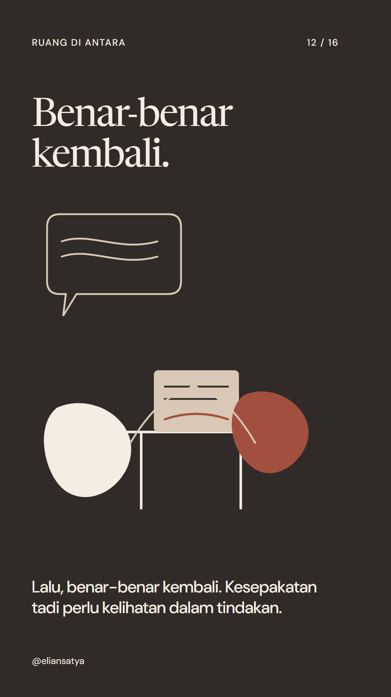
Bring the established participant back to the same unfinished topic.
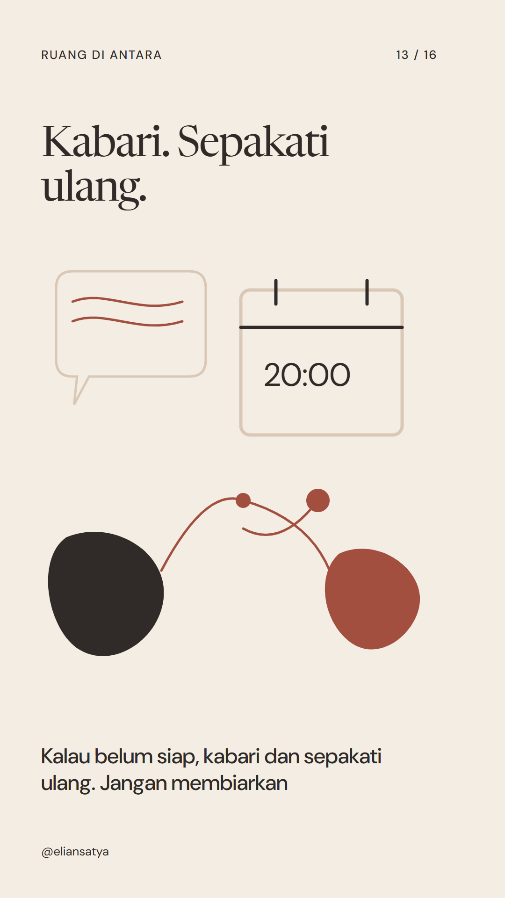
An update travels before the appointment marker is moved by agreement.
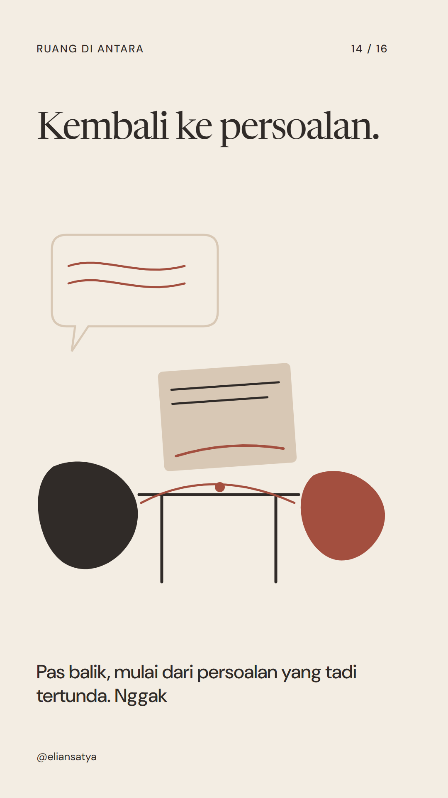
Bring the original changed-plan card back to the shared table for discussion.
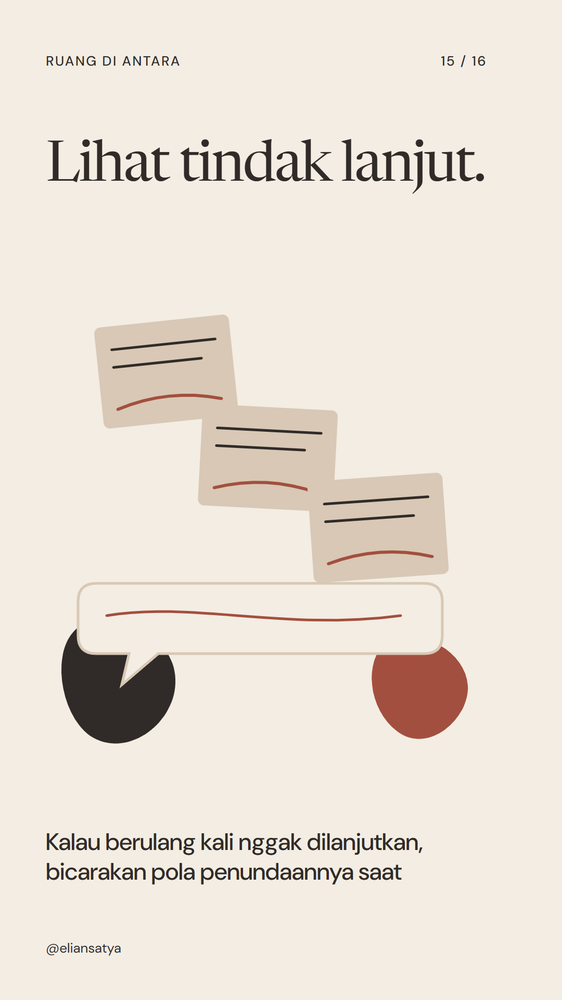
Make repeated pending cards visible as a pattern that can itself be discussed.
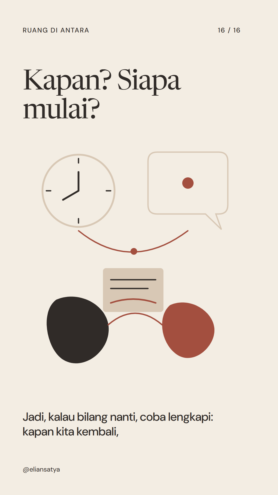
Complete the shared return path with time and initiation markers, then hold quietly.